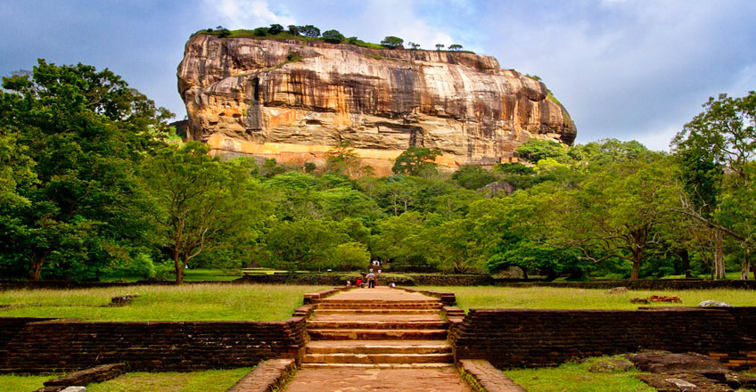
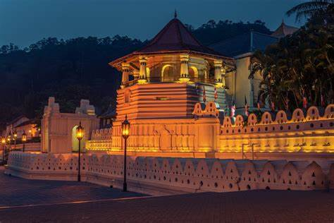

With a history expanding over 3000years, Sri Lanka holds some of world’s ancient cities including Anuradhapura, Polonnaruwa and Digamadulla; their once glorious townships, palaces, temples, monasteries, hospitals and theaters intricately carved and modeled out of stone lay and abandoned and forgotten with time amidst the soaring jungles.
Of all the ancient cities of Lanka, the most famed and most exquisite is the Kingdom of Anuradhapura. Sri Lanka’s third and the longest serving capital and one of the oldest continuously inhabited cities in the world is also one of the most sacred cities of World Buddhists. It was the capital of Sri Lanka from the Fourth Century BC up to the turn of the eleventh Century and was one of the most stable and durable centers of political power and urban life in South Asia.
Sigiriya, a fifth century AD fortress and a water garden displays some of the most futuristic elements of landscaping and some of the oldest murals recorded in the country
Polonnaruwa, the second most ancient kingdom of the country boasts of Irrigation systems that are far superior to those of the and they still provide irrigation water to the farmers in and around Polonnaruwa.Digamadulla, the Eastern kingdom of Sri Lanka was the agricultural and spiritual capital of the country during the Anuradhapura kingdom.
Sri Lanka’s last kingdom the Kingdome of Kandy is a testament to the Sri Lankan’s ability to pick up and rise from ashes. After being burned and ravaged more than thrice by the invading Portuguese the Kandyan Kingdom still holds beautifully carved and built houses, palaces and temple preserved for nearly 500 years.
